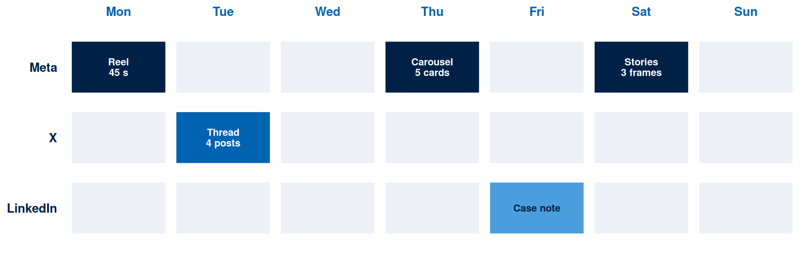

Week 8 Tutorial: Ad Formats and Creative Hub
Tutorial Ad Formats & Creative Hub
Acquisition
1 Orientation
⏱ 10 min
Brief; exemplar plan; filename rule.
Investigation
2 Formats & Specs
⏱ 35 min
Review Meta Creative Hub and X Ads specs; list 2-3 viable formats per platform with notes.
Production
3 Plan Build
⏱ 40 min
Draft a one-week plan: platform, format, message, asset, cadence, primary metric.
Production
4 Rationale
⏱ 25 min
Write two paragraphs linking choices to TAM and SIP and the expected effect.
Assessment
5 Share & Upload
⏱ 10 min
Pair share; upload one PDF to Moodle.
Your tutorial session runs for two hours. You will read the live format specifications published by two platforms, shortlist the formats your campaign can actually produce, and build a one-week plan with a theory-anchored rationale. Your week has nine hours of structured learning time: this two-hour tutorial, the one-hour lecture, and six hours of self-directed study covered in the independent study chapter.
Activity 1: Orientation (10 minutes)
Format: Whole class | Output: Scope note naming your brand, segment, and the barrier you are attacking
Your tutor projects the exemplar one-week plan for Reefkind. Read it once before you start your own: it shows the level of specificity every later activity expects.
Write three lines in your notes.
- The brand and segment you are planning for, carried forward from your Week 2 canvas.
- Which of the three Technology Acceptance Model barriers blocks that segment: ease, usefulness, or trust.
- One sentence of evidence for that answer, or the label
[ASSUMPTION]with the test that would settle it.
Filename rule. Everything you upload this week is named W08_[YourName]_SocialPlan.pdf. A file arriving under any other name is returned unopened.
Activity 2: Formats and Specs (35 minutes)
Format: Pairs | Output: A shortlist of two to three viable formats per platform, with specification notes
This activity puts you inside the live documentation. Both pages are public and open without an account.
NoteWhere to read the specs
Meta: the Meta Ads Guide covers Facebook, Instagram, and Threads. Choose a format, then choose a placement, and the page gives you aspect ratio, resolution, file type, and the character limits for primary text, headline, and description.
X: the X creative ad specifications cover image, video, and carousel ads, with the aspect ratios X currently supports and the 280-character post copy limit.
Meta Creative Hub is Meta’s mockup workspace and sits behind an Ads Manager login. Where your pair has that access, build your mockup there and export the preview. Otherwise take the specification numbers from the Ads Guide and mock up in Penpot, which you used in Week 3.
Work through this in three passes.
Pass one, ten minutes. Open both pages and find the specification for one video format on each platform. Write down four things for each: the aspect ratios offered, the maximum duration, the file types accepted, and where the copy limits fall. Record the date you read the page. These specifications change, and a plan citing an undated source is a plan nobody can check.
Pass two, fifteen minutes. Shortlist two to three formats per platform that your campaign can actually produce this month. Viability is the test, and it has three parts: can you shoot or design the asset with the equipment and images you have, does the format suit the message from your Week 4 copybook, and does the placement reach the segment in your canvas. A format failing any one of the three leaves the shortlist.
Pass three, ten minutes. For each shortlisted format write one note naming the constraint that will bite you. Reefkind’s notes read like this.
| Platform and format | Specification noted (read 2026-08-05) | The constraint that will bite |
|---|---|---|
| Meta, Reels, 9:16 | Vertical full-screen; copy sits over the lower third in-app | The lab certificate is a landscape A4 scan, so it needs reshooting held in frame, and the ingredient text has to stay clear of the lower third where the caption overlays it |
| Meta, feed carousel | Multiple cards, each 1:1 | Comparing four UV filters needs four cards plus a summary card, and card five is where people stop swiping, so the conclusion goes on card one as well |
| X, image ad, 16:9 | Post copy capped at 280 characters | The full filter-chemistry argument runs past 280, so it becomes a thread with the claim complete in the first post |
Compare shortlists with your partner. Where you chose different formats for the same barrier, write one sentence naming the assumption behind the difference.
Activity 3: Plan Build (40 minutes)
Format: Individual | Output: A one-week plan with six fields completed per post
Draft one week of activity. The planner’s six fields are the columns, and every post needs all six.
Platform. Which environment, and which placement inside it.
Format. One from your Activity 2 shortlist. A format outside the shortlist means going back and justifying it.
Message. One sentence, carrying the claim from your Week 4 copybook.
Asset. What physically has to exist before this post can run, and who makes it.
Cadence. Which day, and what the reply window is after publication.
Primary metric. One metric, chosen from reach, engagement quality, or click and conversion.
Reefkind’s completed week is below. Yours goes in the same shape, at the same level of detail.
| Day | Platform | Format | Message | Asset | Primary metric |
|---|---|---|---|---|---|
| Mon | Meta, Reels | 9:16 video, 45 s | The ingredient list read aloud beside the lab certificate | Reshot certificate held in frame; burned-in captions | Saves |
| Tue | X | Thread, 4 posts | Which UV filters bleach coral and which leave it alone | Filter comparison graphic, 16:9 | Engagement quality: replies carrying a question |
| Thu | Meta, feed | Carousel, 5 cards | Four filters compared, conclusion first | Five 1:1 cards designed in Penpot | Saves |
| Fri | Single image post | What changed on one dive centre’s retail shelf | Shelf photograph with owner quote and consent | Enquiries | |
| Sat | Meta, Stories | Story sequence, 3 frames | Where to buy it on three islands | Map frames with stockist names | Link taps |
Two checks before you move on. Count your posts against the reply capacity you actually have: five posts with a twenty-minute reply window each add up to one hour forty minutes of staffing across the week, and a plan that skips this is planning the production and leaving the relationship to chance. And confirm every metric you named is one of the three evaluation lenses. A follower target belongs to none of them.
Activity 4: Rationale (25 minutes)
Format: Individual | Output: Two paragraphs, roughly 120 to 180 words each
This is the activity your submission is marked on. Two paragraphs, one per theory, each ending in an expected effect you could later check.
Paragraph one, the Technology Acceptance Model. Name the barrier your segment faces, say which posts in your plan attack it, and state what you expect to change.
Paragraph two, Social Information Processing. Explain how your cadence and reply plan build relationship over time, and state the expected effect.
Reefkind’s paragraphs, as a model of the register expected:
The barrier for visiting divers is trust. “Reef-safe” appears on products later found to contain oxybenzone, so a visitor treats the phrase as marketing until something external backs it. Three of the five posts this week carry external evidence: the Reel reads the ingredient list beside a dated lab certificate, the carousel compares filter chemistry with the sources named on the final card, and the Friday LinkedIn post quotes a dive centre owner who is willing to be identified. Ease is a real constraint too, though a smaller one, and it is handled by the Saturday Stories sequence naming the three islands with stockists so a visitor knows where to walk. The expected effect is a higher save rate on the two evidence posts than on the stockist Story, since saving is what a buyer does when the purchase happens later and elsewhere.
Social Information Processing predicts that relational depth accumulates through exchange, and that text-based channels reach it more slowly than face-to-face contact does. That makes reply time a campaign input. Each post this week has a staffed twenty-minute reply window in its first three hours, and questions about wetsuit thickness, reapplication, or shipping get a specific answer in public where later readers can see it. Cadence is set at three Meta posts, an X thread, and a LinkedIn post across seven days, which is sustainable for a two-person team and signals continued presence without crowding the feed. The expected effect is that replies carrying a question rise across the week as earlier answers demonstrate the account is worth asking, and that measure is the diagnostic worth watching before any change to spend.
Notice what those paragraphs avoid. Neither says the content is engaging or high quality. Both name a mechanism and commit to an observable consequence.